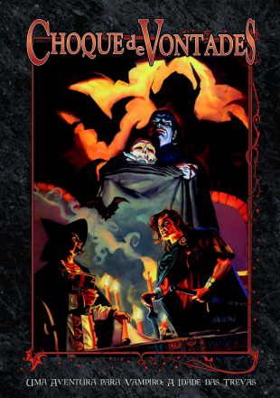
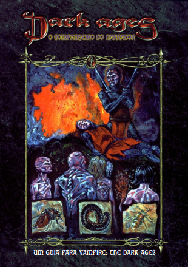
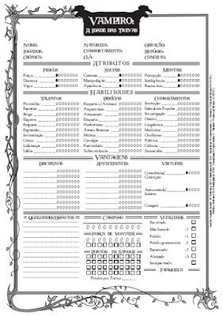
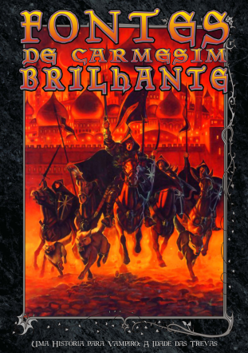
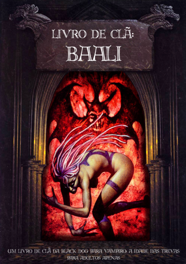
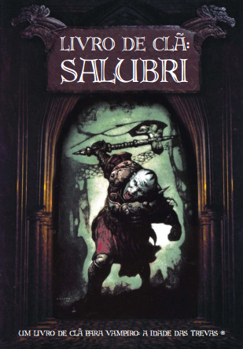
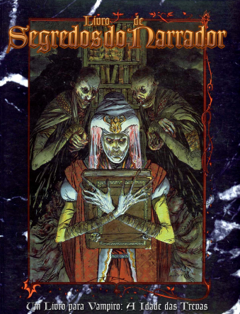

Biblioteca Druídica

Vampiro a Idade das Trevas - Choque de Vontades
Devir

Vampiro a Idade das Trevas - Companheiro do Narrador
Devir
Vampiro a Idade das Trevas - Escudo do Narrador
Devir

Vampiro a Idade das Trevas - Ficha de Personagem
Devir

Vampiro a Idade das Trevas - Fontes de Carmesim Brilhante
Devir

Vampiro a Idade das Trevas - Livro de Clã - Baali
Devir
Vampiro a Idade das Trevas - Livro de Clã - Capadócio
Devir

Vampiro a Idade das Trevas - Livro de Clã - Salubri
Devir

Vampiro a Idade das Trevas - Livro de Segredos do Narrador
Devir
Vampiro a Idade das Trevas - Módulo Básico
Devir
Vampiro a Idade das Trevas - Os Fragmentos de Erciyes
Devir